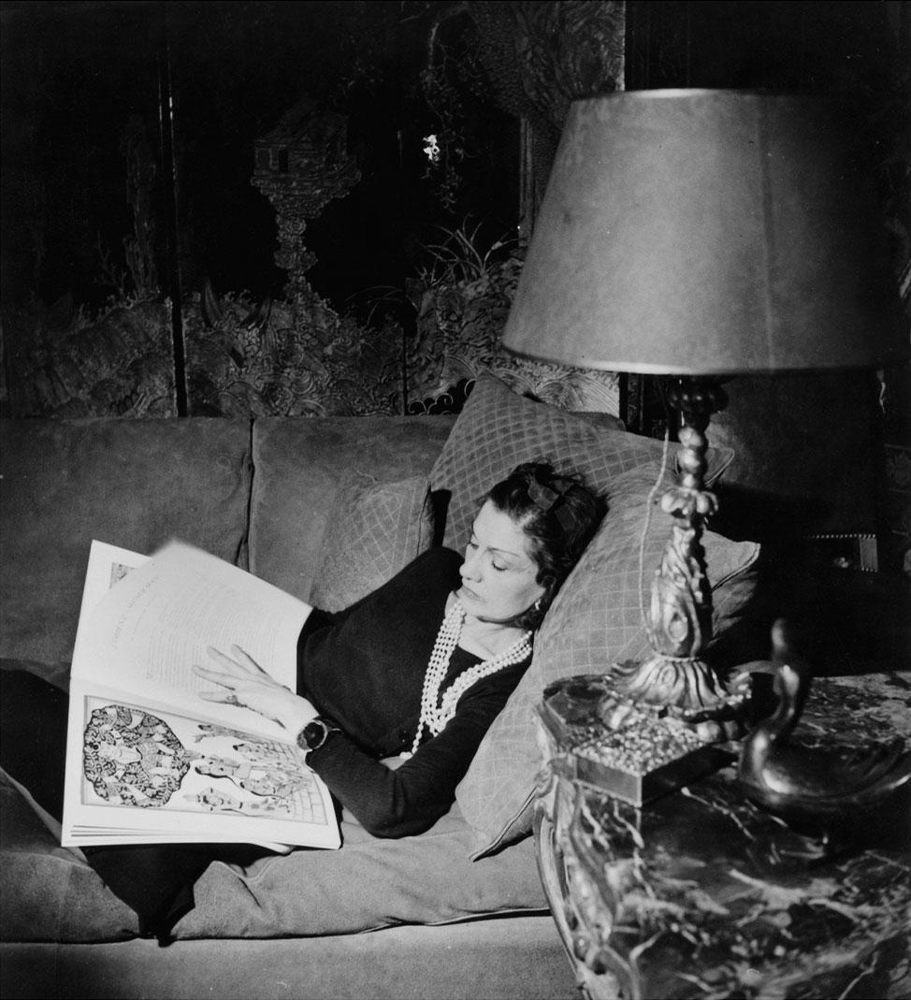
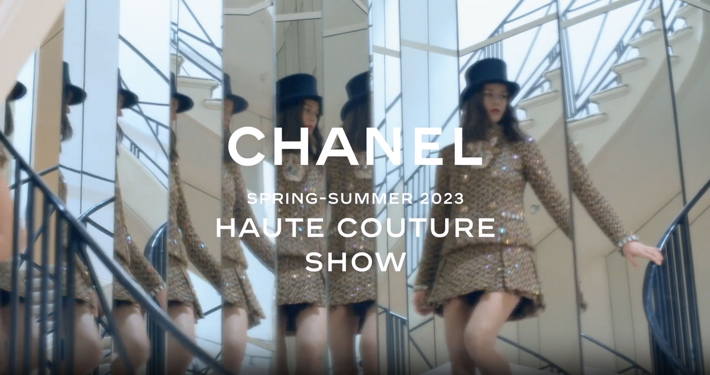
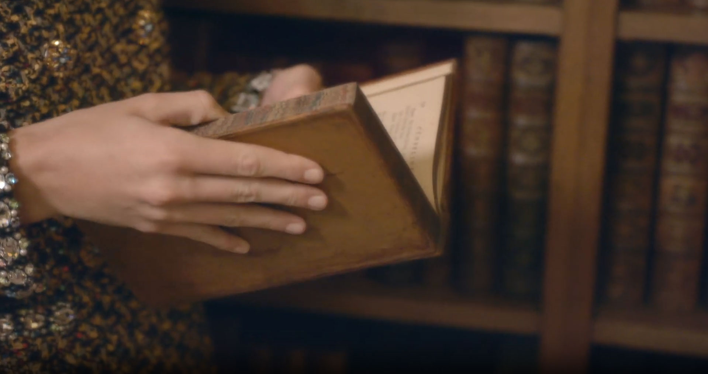
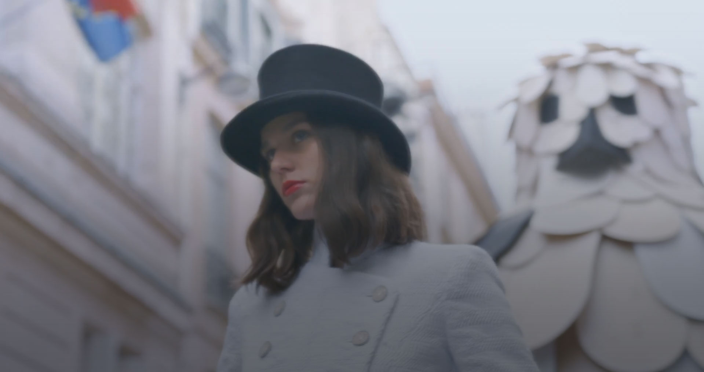
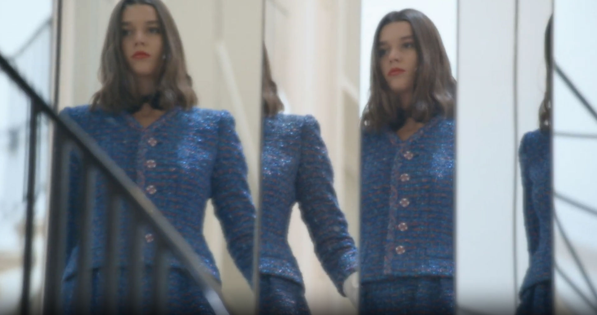
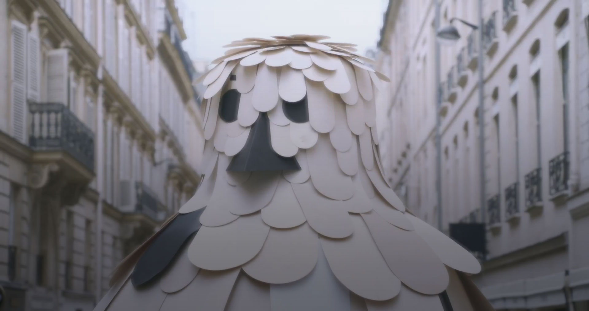
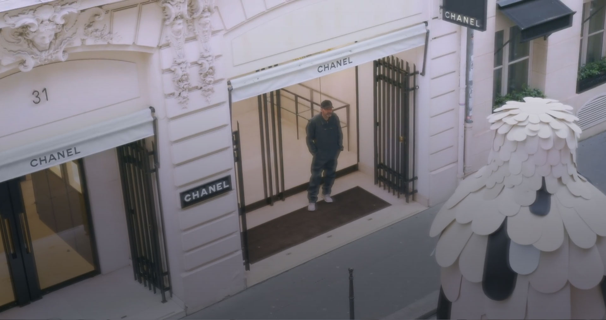

아티스트 자비에 베이앙(Xavier Veilhan)의 상상 속에
존재하던 거대한 새가 프랑스 파리의 깡봉가에
내려와 앉았습니다.
새와 함께 포즈를 취하는 컬렉션의 뮤즈,
모델 비비안 로너가 버지니 비아르가 지휘한
샤넬 2023 봄-여름 오뜨 꾸뛰르 쇼의 서막을 알리며,
베이앙이 떠올린 꿈속 세계와 샤넬의 역사를 수놓은
여러 상징물이 얽혀 탄생한
신화적인 동물 우화집을 탐구합니다.
— a flap of wings of a fantasy —
muse, model vivian launer

mythical animal
프랑스 파리의 그랑 팔레 에페메르(Grand Palais Éphémère)에서 열린
샤넬 2023 S/S Haute Couture 패션쇼.
버지니 비아르는 이번 쇼를 위해 아티스트 자비에 베이앙(Xavier Veilhan)을 초청했습니다.
그는 동물 우화집에서 영감을 얻어 샤넬 하우스의 역사를 수놓은 여러 상징물과 함께 아티스트 본인의 상상력에서 떠올린 시각적 형상들로 쇼를 장식했습니다.
지난 2022년 1월,
비아르가 베이앙에게 제안해 시작된 창의적인 교감은 3부 형태로 구성되었고,
이번 작품은 3부의 마지막 작품입니다.
버지니 비아르가 신화적인 동물 조각상에서 영감을 얻어 준비한
샤넬 2023 S/S Haute Couture 컬렉션은
프랑스 파리의 깡봉가 31번지에 위치한 가브리엘 샤넬의 아파트에서 선보였습니다.

Features of this collection
Eye-catching embroidery
— Chanel 2023 S/S Haute Couture —







Aren't you curious? What's next